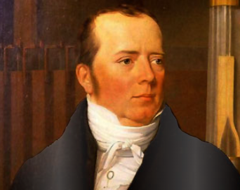
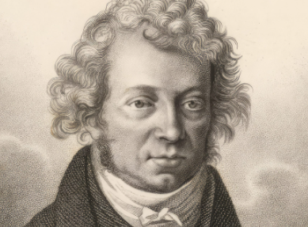
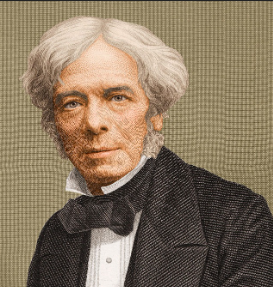
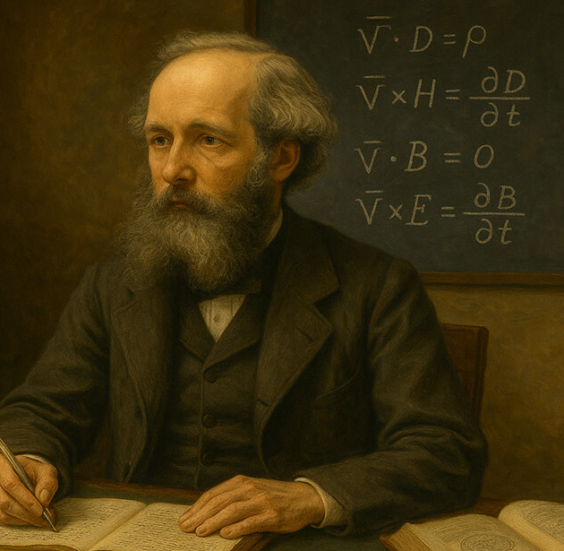

Descubre la unificación de dos fuerzas fundamentales que cambiaron el mundo.
Es la rama de la física que estudia y unifica los fenómenos eléctricos y magnéticos en una sola teoría. Describe la interacción de partículas cargadas con campos eléctricos y magnéticos.
Quién establece el término: La unificación fue formalizada por **James Clerk Maxwell**, pero el descubrimiento fundamental de la relación fue de Hans Christian Ørsted.
Explora la línea del tiempo de los descubrimientos.
14 de agosto de 1820 (Publicación)

(1777–1851, Dinamarca). Físico y químico. Durante una clase, descubrió accidentalmente que una corriente eléctrica desviaba la aguja de una brújula cercana.
Aporte: Demostró empíricamente que **la electricidad genera magnetismo**. Inició el electromagnetismo.
Septiembre de 1820 (Pocos días después de Ørsted)

(1775–1836, Francia). Matemático y físico. Considerado uno de los fundadores de la electrodinámica.
Aporte: Formuló la ley que describe la fuerza entre dos conductores con corriente. Estableció la teoría matemática del electromagnetismo. La unidad de corriente (Amperio) lleva su nombre.
29 de agosto de 1831 (Descubrimiento)

(1791–1867, Reino Unido). Físico y químico, gran experimentador. Venía de una familia humilde y fue autodidacta.
Aporte: Descubrió la **Inducción Electromagnética**: un campo magnético variable induce una corriente eléctrica. Creó el primer motor eléctrico y el primer generador (dinamo).
1865 (Publicación de "A Dynamical Theory...")

(1831–1879, Reino Unido). Físico matemático. Su trabajo unificó todo el conocimiento previo.
Aporte: Formuló las **Ecuaciones de Maxwell**, cuatro ecuaciones que unifican electricidad, magnetismo y luz como manifestaciones del mismo fenómeno: el campo electromagnético. Predijo las ondas electromagnéticas.
Mira el efecto del electromagnetismo tú mismo con materiales fáciles de conseguir.
Pon a prueba tus conocimientos. Estilo Kahoot (10 preguntas).
Pregunta 1: ...
Puntuación: 0 / 10